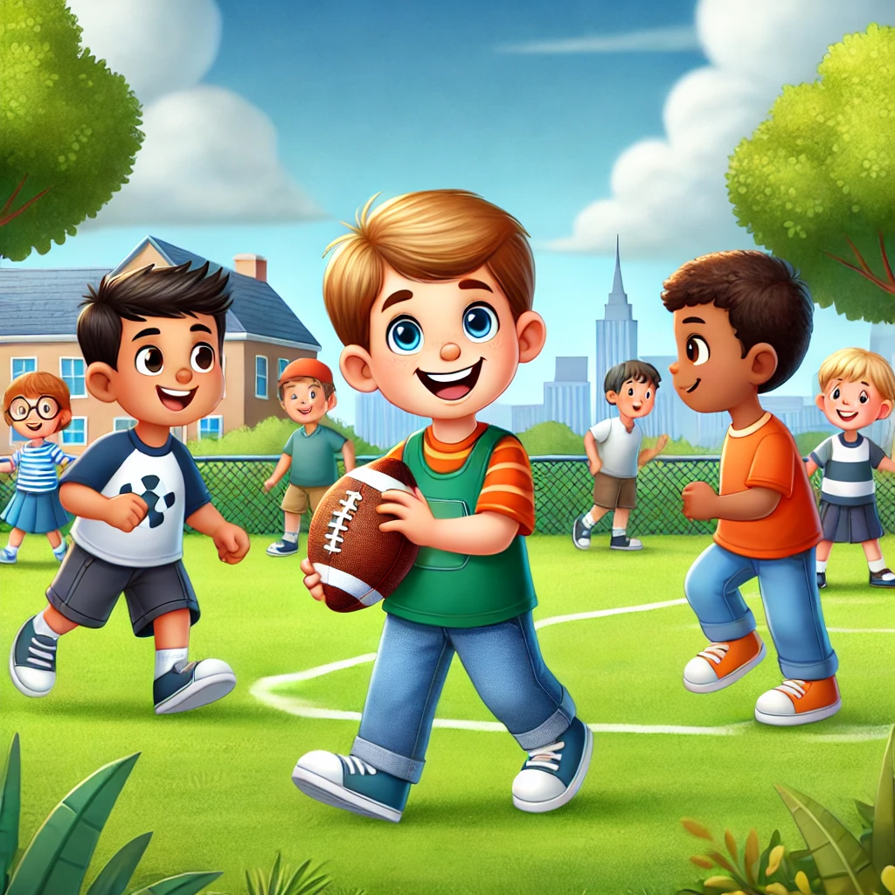
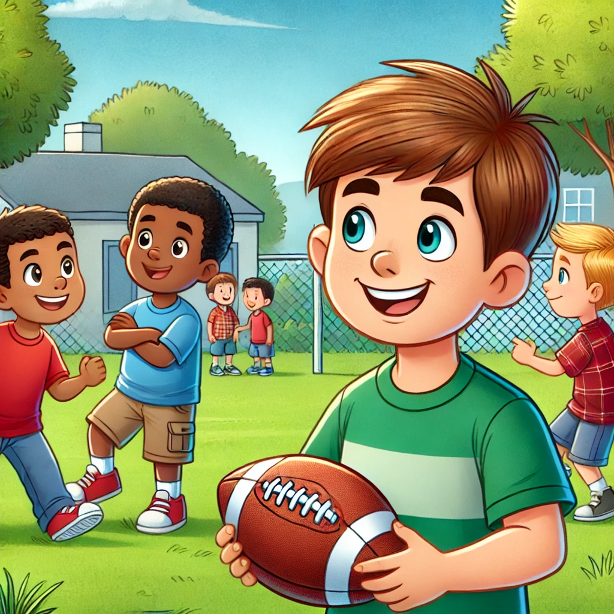

Ethan loved playing football at recess. Every day, he and his friends would
meet on the field and toss the ball around, laughing and having fun. One sunny afternoon, a group of
older boys came over to join the game. At first, Ethan was excited. "Cool! Now we have more players!"
he thought.
But as the game went on, Ethan noticed something. The older boys were not playing very nicely.
They weren’t sharing the ball, and they were saying things that made some of Ethan’s friends feel bad.
"Hey, you’re too slow!" one of the older boys said to Ethan’s friend, Jack. Jack looked down
at his shoes, feeling embarrassed.
Ethan didn't like seeing his friend upset. He thought about what to do. He could get angry and
yell back, but that didn’t feel right. Instead, he took a deep breath and walked over to the
older boys.
“Hey, guys,” Ethan said calmly, “we’re all here to have fun. It’s not cool to leave anyone out
or make them feel bad.”
The older boys stopped and looked at Ethan. For a moment, they didn’t say anything.
"Why don’t we try playing a fair game where everyone gets a chance?" Ethan added. "That way,
it’ll be more fun for all of us."
One of the older boys, who had been the loudest, shrugged. “Alright, fine,” he said,
tossing the ball back to Ethan. “Let’s just play.”
From then on, the game became more enjoyable. Ethan made sure everyone got a turn with the ball,
and the older boys started playing more kindly too. Jack smiled again, and everyone was laughing
together like before.

At the end of recess, as they were heading back to class, one of the older boys patted Ethan
on the back. “You’re pretty cool,” he said.
Ethan smiled, feeling proud. He had learned something important that day: when people aren’t
being kind, sometimes the best thing to do is to stay calm, speak up, and remind everyone what
really matters—having fun and being kind to each other.